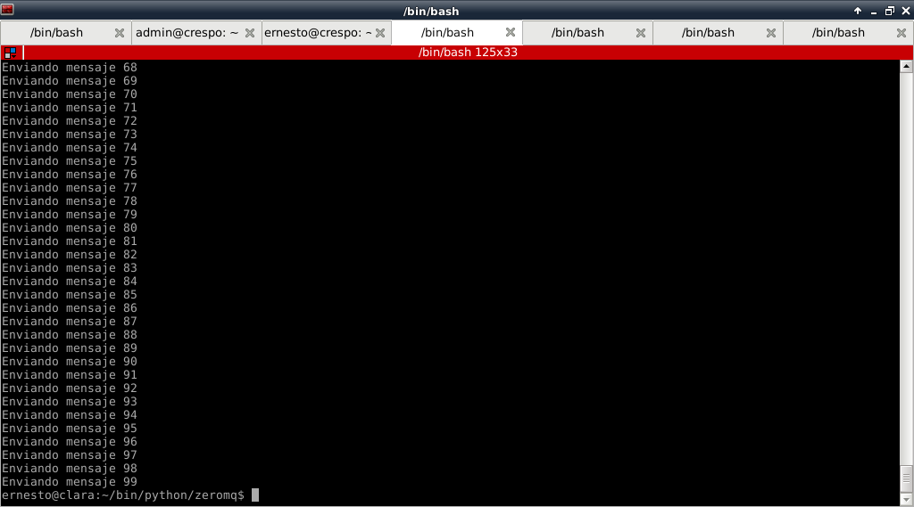
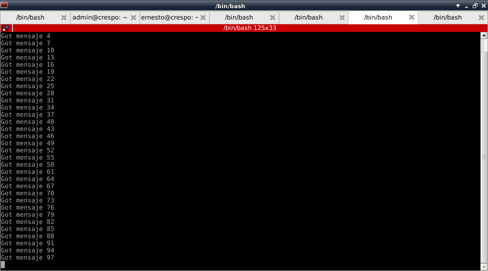
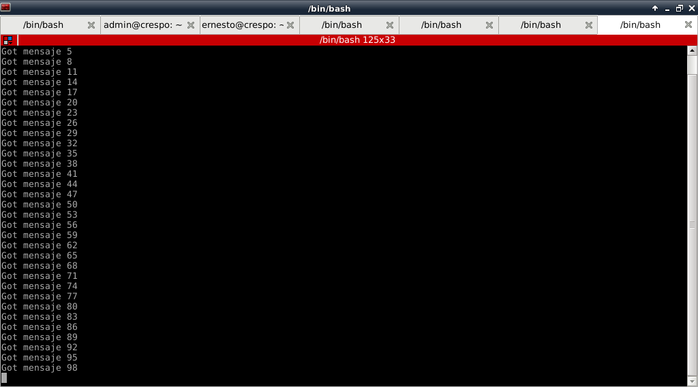

Tutorial de ZeroMQ con Python. Parte 3.
Posted on lun 28 mayo 2012 in Tutorial Python • 3 min read
Tomando como base el artículo de ZeroMQ parte 1, se puede crear varios servidores (como cluster de aplicación).
Está vez se crean 3 scripts servidores, pueden estar en el mismo equipo o en equipos diferentes. Lo único que cambié en cada script es el puerto donde escucha para el servicio.
En el cliente, se crean 3 sockets con los puertos donde escucha los 3 servidores.
La idea es pasar un mensaje por parte del cliente, los servidores los recibe y los envía de vuelta al cliente.
El código del script del lado del cliente es la siguiente:
#!/usr/bin/env python
#importar zeromq
import zmq
#Se crea una instancia del contexto
context = zmq.Context()
#Se crea el socket con parametro peticion (REQ)
socket = context.socket(zmq.REQ)
#Se crean 3 sockets con la IP y los 3 puertos donde escucha
#los 3 servidores.
socket.connect("tcp://127.0.0.1:5000")
socket.connect("tcp://127.0.0.1:6000")
socket.connect("tcp://127.0.0.1:7000")
#Se crea un ciclo de 100 repeticiones
for i in range(100):
#Se crea el string del mensaje
mensaje = "mensaje %s" % i
#Se envia el mensaje
socket.send(mensaje)
#Se muestra en pantalla el mensaje enviado
print "Enviando", mensaje
#Se recibe el mensaje de vuelta
msg_in = socket.recv()
Los scripts de los servidores se muestra a continuación: Servidor 1:
#!/usr/bin/env python
#Se importa zeroMQ
import zmq
#Se crea la instancia del contexto
context = zmq.Context()
#Se crea el socket pasandole como parametro respuesta (REP)
socket = context.socket(zmq.REP)
#Se asocia el socket a la IP y el puerto
socket.bind("tcp://127.0.0.1:5000")
#Se crea un ciclo
while True:
#Se recibe el mensaje
mensaje = socket.recv()
#Se muestra en pantalla el mensaje recibido
print "Recibiendo", mensaje
#Se envia el mensaje de regreso al cliente
socket.send(mensaje)
Servidor 2:
#!/usr/bin/env python
#Se importa zeroMQ
import zmq
#Se crea la instancia del contexto
context = zmq.Context()
#Se crea el socket pasandole como parametro respuesta (REP)
socket = context.socket(zmq.REP)
#Se asocia el socket a la IP y el puerto
socket.bind("tcp://127.0.0.1:6000")
#Se crea un ciclo
while True:
#Se recibe el mensaje
mensaje = socket.recv()
#Se muestra en pantalla el mensaje recibido
print "Recibiendo", mensaje
#Se envia el mensaje de regreso al cliente
socket.send(mensaje)
Servidor 3:
#!/usr/bin/env python
#Se importa zeroMQ
import zmq
#Se crea la instancia del contexto
context = zmq.Context()
#Se crea el socket pasandole como parametro respuesta (REP)
socket = context.socket(zmq.REP)
#Se asocia el socket a la IP y el puerto
socket.bind("tcp://127.0.0.1:7000")
#Se crea un ciclo
while True:
#Se recibe el mensaje
mensaje = socket.recv()
#Se muestra en pantalla el mensaje recibido
print "Recibiendo", mensaje
#Se envia el mensaje de regreso al cliente
socket.send(mensaje)
A continuación se inician los 3 servidores y luego el cliente: En la siguiente figura se muestra los envíos realizados por el cliente:

Se muestra a continuación las figuras de los 3 servidores:
Servidor 1:

Servidor 2:

servidor 3:

Al ver las 3 figuras de los servidores se nota como se distribuye de forma equitativa la recepción de los mensajes.
Luego se puede complicar algo más este esquema agregando una cola entre los clientes y los servidores.
¡Haz tu donativo! Si te gustó el artículo puedes realizar un donativo con Bitcoin (BTC) usando la billetera digital de tu preferencia a la siguiente dirección: 17MtNybhdkA9GV3UNS6BTwPcuhjXoPrSzV
O Escaneando el código QR desde la billetera: